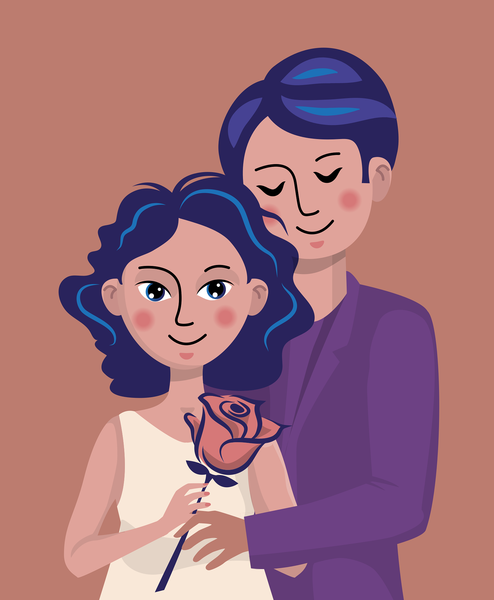

<link rel="stylesheet" href="style.css">

<link rel="stylesheet" href="style.css">

<header class="main-header">
  <div class="logo">
    <a href="index.html" class="logo-link">
      
      <span>ClarityBased</span>
    </a>
  </div>
  <nav class="nav-menu">
    <a href="SelfGrow.html">Self-Growth</a>
    <a href="CareerFinance.html">Career & Finance</a>
    <a href="Relationships.html">Relationships</a>
    <a href="MindTraining.html">Mind Training</a>
    <a href="WellnessPsychology.html">Wellness & Psychology</a>
  </nav>
</header>


<!-- პირველი ბლოკი -->
<section class="hero-card">
  <div class="hero-left">
    
  </div>
  <div class="hero-right">
    <h2>Relationship Advice for Women — Love with Strength, Not Fear</h2>
    <ul>
      <li>1. Don’t shrink to be loved<br> If you’re always trying to make yourself “easier to love,” you’ll forget how to love yourself.
Real love doesn’t ask you to be less. It meets you where you are.</li>
      <li>2. Standards aren’t “too much”<br> Wanting clarity, honesty, or consistency isn’t high-maintenance.
It’s basic emotional safety. Don’t let anyone guilt you for having standards.</li>
      <li>3. Stop overgiving just to feel worthy<br> You don’t have to earn love by proving yourself useful.
You’re already enough — even when you rest, say no, or show your needs.</li>
      <li>4. Silence isn’t peace<br> If you’re constantly “keeping the peace” by staying quiet — that’s not harmony, it’s suppression.
Your voice matters, even in love.</li>
      <li>5. Know the difference between chemistry and safety<br> The butterflies are nice — but calm love lasts longer.
Look for the one who feels like exhale, not adrenaline.</li>
    </ul>

    <div class="hero-footer">
      <div class="hero-note">
        <p>Real love starts with self-trust.
Let go of fear — and learn to love from strength, not survival.</p>
      </div>
      <div class="hero-button">
        <a class="cta-button" href="https://claritybased.gumroad.com/l/gykiq">Get the Relationship Guide <span>$4.99</span></a>
      </div>
    </div>
</section>

<div class="challenge-container">
  <div class="hero-left">
    
  </div>
  <div class="hero-right">
    <h2>Tips for Men on How to Build a Healthy Relationship</h2>
    <ol>
      <li><strong>Listen to understand, not to fix</strong><br>Sometimes she just needs to be heard, not “solved.”
Sit with her words before offering a solution — presence is more powerful than advice.</li>
      <li><strong>You don’t have to have it all figured out</strong><br>Healthy relationships aren’t about being perfect.
They’re about being real, open, and willing to grow together.</li>
      <li><strong>Respect her space as much as her presence</strong><br>Loving someone doesn’t mean being glued to them.
Trust is built when both people feel free, not controlled.</li>
      <li><strong>Show affection outside of sex</strong><br>Touch her hand, make eye contact, leave a kind message.
Emotional intimacy is what creates lasting desire.</li>
      <li><strong>Work on yourself — not just for her, but for you</strong><br>A strong relationship starts with a grounded man.
Your emotional awareness, discipline, and self-worth? That’s what holds the connection strong.</li>
    </ol>
    <div class="cta">
      <p>You don’t need to be perfect. Just present, honest, and willing to grow.</p>
      <a class="cta-button" href="https://claritybased.gumroad.com/l/wuriyw">Get the Relationship Tips Guide <span>$3.99</span></a>
    </div>
  </div>
</div>


<div class="challenge-container">
  <div class="hero-left">
    
  </div>
  <div class="hero-right">
    <h2>Self-Esteem and the Selfie — Reclaiming Your Worth in a Filtered World</h2>
    <ol>
      <li><strong>You’re not your best angle — you’re a whole person</strong><br>It’s easy to start thinking your beauty is that one good photo.
But your worth isn’t pixel-based. It’s felt — in how you live, how you love, how you show up.</li>
      <li><strong>Stop comparing your behind-the-scenes to someone else’s highlight reel</strong><br>Most of what you see online is posed, curated, filtered.
Your real life isn’t less — it’s just not edited for views. And that’s a good thing.</li>
      <li><strong>Don’t wait to “look better” before you show up in life</strong><br>You don’t need to change your body to be visible, lovable, or worthy.
Your now-body is already someone’s safe place — let it be yours too.</li>
      <li><strong>Curate your feed like your peace depends on it</strong><br>Unfollow what makes you shrink. Follow what helps you breathe.
Your mental space deserves as much care as your physical space.</li>
      <li><strong>Your self-worth isn’t found in likes — it’s rebuilt in silence</strong><br>Sometimes you need to unplug just to hear your own voice again.
Validation is nice — but it’s no substitute for self-trust.</li>
    </ol>
    <div class="cta">
      <p>You were never meant to compete with filters.
You were meant to be real — and that’s more than enough.</p>
      <a class="cta-button" href="https://claritybased.gumroad.com/l/qwtmxp">Get the Self-Esteem Toolkit <span>$4.99</span></a>
    </div>
  </div>
</div>


<div class="challenge-container">
  <div class="hero-left">
    
  </div>
  <div class="hero-right">
    <h2>How to Get Over a Breakup — Heal, Grow, and Come Back Stronger</h2>
    <ol>
      <li><strong>Feel it, don’t fake it</strong><br>
     You don’t need to “be okay” right away.
Heartbreak isn’t weakness — it’s proof that you felt something real. Give yourself permission to feel before you force yourself to move on.</li>
      <li><strong>Unfollow, mute, protect your peace</strong><br>
        You’re not being petty — you’re protecting your healing.
Seeing their updates every day doesn’t make you strong. Distance gives your heart room to breathe.</li>
      <li><strong>Don’t turn pain into performance</strong><br>
        You don’t owe the world proof that you’re over it.
You’re allowed to go quiet, to fall apart in private, to rebuild without posting it.</li>
      <li><strong>Find one daily ritual that’s just yours</strong><br>
        Whether it’s journaling, walks, or 10 minutes of silence — make space for you.
Healing isn’t loud. It’s in the quiet, small habits that slowly bring you back to yourself.</li>
      <li><strong>Let this version of you be your focus</strong><br>
        Don’t ask “what did I do wrong?” — ask “what do I need now?”
Breakups aren’t just endings. They’re redirections.</li>
    </ol>
    <div class="cta">
      <p>You won’t stay broken. You’re not meant to.
This pain will shape you — but it won’t define you.</p>
      <a class="cta-button" href="https://claritybased.gumroad.com/l/aczayp">Get the Breakup Recovery Guide <span>$5.99</span></a>
    </div>
  </div>
</div>


<div class="challenge-container">
  <div class="hero-left">
    
  </div>
  <div class="hero-right">
    <h2>How to Recognize a Manipulator — Protect Your Mind, Energy, and Boundaries</h2>
    <ol>
      <li><strong>They twist your words, then blame you for reacting</strong><br>
        You’re not “too sensitive.”
If you keep explaining yourself for things you didn’t even mean — you might be getting manipulated.</li>
      <li><strong>They confuse you more than they connect</strong><br>
        One day it’s love bombing, next day it’s cold silence.
Genuine connection feels steady. Manipulation feels like walking on eggshells.</li>
      <li><strong>They make you doubt your reality</strong><br>
        If you start thinking, “maybe I am the problem,” all the time — pause.
Gaslighting works because it makes you question your own clarity.</li>
      <li><strong>They cross your boundaries, then call you dramatic</strong><br>
        It’s not about how “big” the boundary is — it’s about whether they respect it.
Healthy people don’t test your limits to see how much you’ll tolerate.</li>
      <li><strong>They drain your energy, not add to it</strong><br>
        You always feel tired after talking to them.
That’s not normal. Real connection should leave you feeling seen, not smaller.</li>
    </ol>
    <div class="cta">
      <p>Manipulation doesn’t always look obvious — but your body always knows.
Trust the tension. Respect the red flags.</p>
      <a class="cta-button" href="https://claritybased.gumroad.com/l/vcbwtn">Get the Emotional Boundaries Guide <span>$4.99</span></a>
    </div>
  </div>
</div>

<link rel="stylesheet" href="style.css">

<script src="script.js"></script>


<footer class="custom-footer">
  <div class="footer-left">
    <button class="contact-button" id="contactBtn">
      <i class="fas fa-envelope"></i> Contact Us
    </button>
  </div>

  <div class="footer-right">
    <div class="brand-info">
      
      <div>
        <h2>ClarityBased</h2>
        <p class="slogan">Find clarity. Live intentionally.</p>
      </div>
    </div>
    <p class="footer-copy">© 2025 ClarityBased. All rights reserved.</p>
  </div>
</footer>


<div id="contactModal" class="modal">
  <div class="modal-content">
    <span id="closeModal" class="close">&times;</span>
    <h2>Contact Us</h2>
    <form action="https://formspree.io/f/mldnyaoo" method="POST">
      <input type="text" name="name" placeholder="Your Name" required />
      <input type="email" name="email" placeholder="Your Email" required />
      <textarea name="message" placeholder="Your Message" required></textarea>
      <button type="submit">Send</button>
    </form>
  </div>
</div>